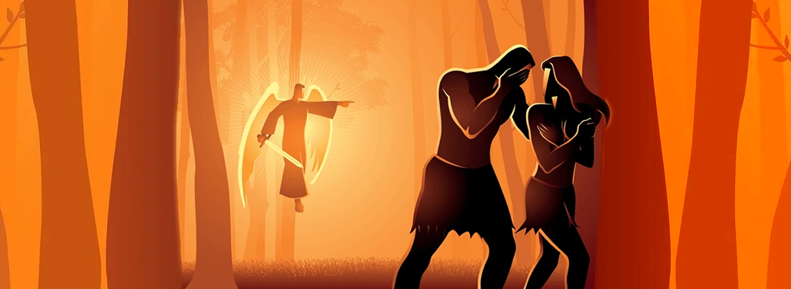
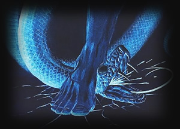

The Fall and the First Promise (Genesis 3)
"He shall bruise your head, and you shall bruise his heel." (Genesis 3:15)
Genesis 3 marks a turning point in the biblical narrative. In a garden of abundance and intimacy, humanity chooses rebellion. The serpent deceives, and Adam and Eve disobey God's command. Sin enters the world-not just as an act, but as a rupture in relationship, identity, and purpose.

Disobedience and Consequence
The temptation was subtle: "Did God really say...?" The desire was seductive: "You will be like God." The result was devastating: shame, fear, and separation. Humanity hides from God, and creation groans under the weight of brokenness.
- Loss of innocence: Eyes opened, but hearts burdened.
- Loss of intimacy: God calls, but they hide.
- Loss of vocation: The ground is cursed, and labor becomes toil.
The First Gospel
Yet in the midst of judgment, God speaks hope. Genesis 3:15 is often called the "protoevangelium"-the first gospel. A descendant of the woman will crush the serpent's head. This is not just a curse on evil; it is a promise of redemption.
Even as God clothes Adam and Eve with garments of skin, He foreshadows a greater covering-the righteousness of Christ. The story of salvation begins not with perfection, but with grace in the aftermath of failure.
Relevance to Salvation
- Sin is real, but so is God's mercy.
- Judgment is deserved, but grace is offered.
- The promise of a Savior is embedded in the earliest pages of Scripture.
"For as in Adam all die, so also in Christ shall all be made alive." (1 Corinthians 15:22)